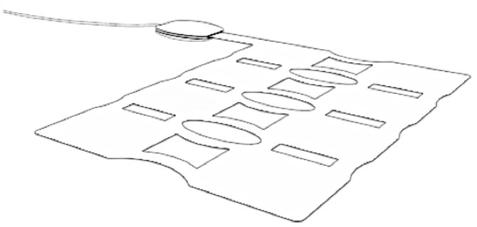
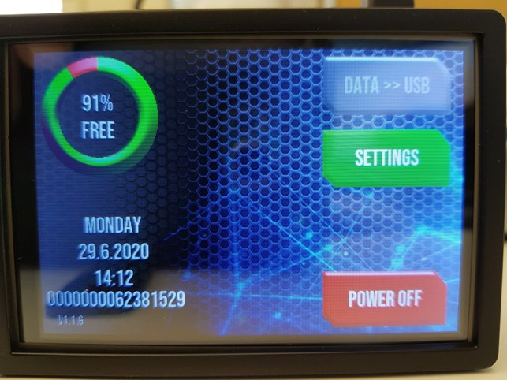
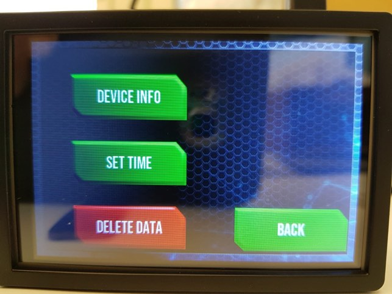
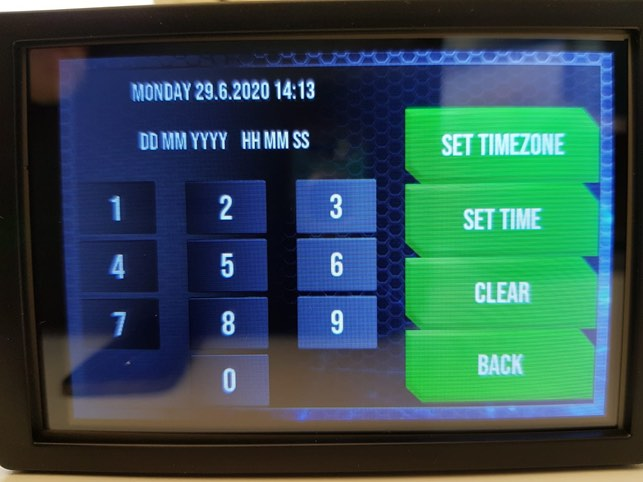
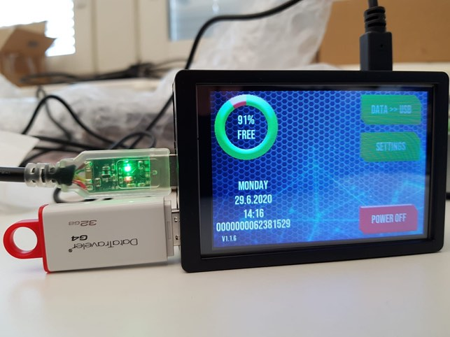
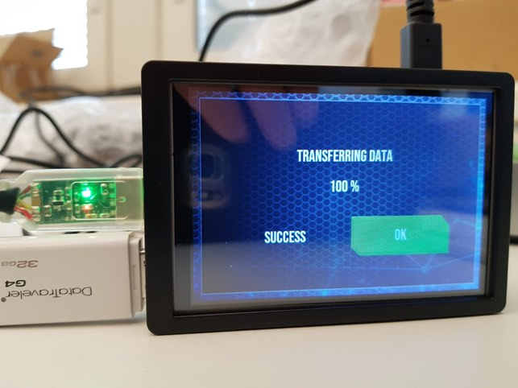
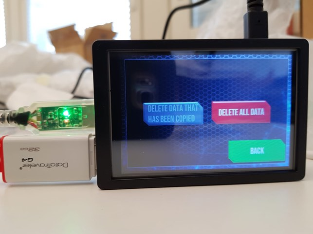
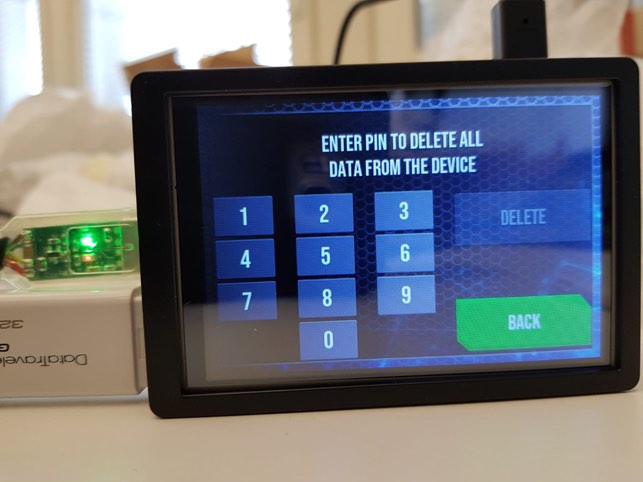

eBedSensor
- General Device Introduction
- Data transfer protocol for professionals
- As a professional: do I need to do anything on a daily basis or all N days (for each patient using a specific device / app)?
- As a professional: do I need to do anything after each individual period of device / app use ended (for each patient using a specific device / app)?
- As a professional: do I need to do anything after the full periods of use of a specific device / app ends (for each patient using a specific device / app)?
- Original device setup and pairing
- Device pre-setup and configuration
- Troubleshooting/FAQ
- Returned device processing and cleaning / an application use period for a participant has ended
- Device recycling and provisioning
General Device Introduction
The eBedSensor is a pressure sensor that is placed under a mattress of a bed and records vital signs (e.g. heart rate, breathing rate) and motion. This data is then used to calculate a range of metrics that can be used to better understand sleep conditions, such as time spent in bed, sleep stages, and sleep apnea.
How does this device look?
There are two parts using this sensor: the recording device named eBedSensor (Figure 1), and VitalTracker, a small touch-screen computer that stores the data (Figure 2). The eBedSensor should be placed under the mattress and connected to VitalTracker using a cable. The VitalTracker is then connected to a power socket using a USB cable, like when charging a phone. Only the power supply provided with the devices should be used as other power supplies can damage the devices.
|  |  |
| Figure 1:eBedSensor | Figure 2:VitalTracker |
What does it record?
The eBedSensor records your vital signs (e.g. heart rate, breathing rate) and motion (e.g. acceleration, rotation and position) when you sleep.
How is it used?
The eBedSensor is placed under a mattress on the slatted or cushion base and connected to the VitalTracker. VitalTracker is then plugged into a power source to begin recording. When you next go to bed, the eBedSensor will record your vital signs and movement. You can verify that data has been recorded by looking at the VitalTracker in the morning: the usage graph will have increased.
Data transfer protocol for professionals
As a professional: do I need to do anything on a daily basis or all N days (for each patient using a specific device / app)?
No. However, if you are carrying out a home visit please check the placement of the eBedSensor is correct and is connected to the VitalTracker as outlined below. It is also recommended to check the correct date and time from the device screen, and if lagging more than some minutes, fix it with ‘SET TIME’ button. You may also make a copy of the recorded data with the dedicated USB flash drive, which runs automatically with few buttons to press and takes only few minutes.
Note: The BedSensor should be stored when transporting in areas that do not exceed 50+ Celsius otherwise sensitivity of the sensor foils will become permanently damaged. Therefore, when you first provide the sensor to a patient and when you pick it up, the bed sensor units must not be transported in a car trunk or left in a parked car as the temperatures can exceed 50+ C.
As a professional: do I need to do anything after each individual period of device / app use ended (for each patient using a specific device / app)?
No, as the participant will keep the BedSensor for the duration of the study you do not need to collect the device.
As a professional: do I need to do anything after the full periods of use of a specific device / app ends (for each patient using a specific device / app)?
Yes. You must manually transfer data from the VitalTracker device to a USB flash drive, which requires connecting the provided USB flash drive directly to VitalTracker and pressing the “Data » USB” button as illustrated below. This will start the transferring data process and a progress bar will appear to notify you when data has successfully been transferred. There is also a separate screen for removing data from the VitalTracker, which should be done prior to giving the eBedSensor to another participant. You should at least verify that data exists on the USB Drive, and it is also recommended to copy the data also to PC or cloud, prior to deleting any data from VitalTracker.

Data shall be copied automatically into the USB flash drive into a folder name with the device serial number, which is also presented on the VitalTracker screen. Data files typically represent 24-hour recordings containing the starting time information in the filename.
The Bed Sensor automatically records three types of data files, named as RAW.DAT, SIG.DAT and HRB.DAT. These files extend in maximum up to 24 hours duration and are automatically changed each day at 11AM. Filesize of 24 hours recording is about 230 Mbytes.
The same flash memory stick can be used to copy multiple devices as each device data shall be automatically copied under different folder names. However, six weeks pilot data shall consume about 10 GB of data space, so the provided 32 GBs memory sticks can in most optimal case contain only up to three devices data.
Follow-up the participant and complete the device evaluation questionnaire.
Original device setup and pairing
If handling a device and it arrives new: what needs doing before it gets sent to a study centre?
Put into inventory management?
Update device inventory to verify that you have received the device. Please navigate to https://inventory.ideafast.eu and follow the steps for registering a new device (input the current location, provider device ID and the IDEA-FAST device ID (from the ID sticker). If the device is not yet equipped with an IDEA-FAST device ID sticker, please attach a new ID sticker from your sticker supply to the top of the VitalPatch device (opposite side of the activation button to avoid covering it up). Please enter this ID in the inventory management system accordingly.
Needs firmware update?
Typically, not applicable. However, if a firmware update is required a specific USB flash drive will be provided that can be inserted into VitalTracker and the update will begin automatically.
Pairing with a companion application?
Not applicable.
Any account setup required?
There will be no account setup to use the eBedSensor.
Needs pairing with hub device?
Not applicable.
Any assembly required?
Please ensure the eBedSensor is connected to VitalTracker, and VitalTracker is connected to the power supply. The touch screen shows the operation mode when touched and dims after a short period of time (30 seconds).
Package together with which other devices for which study centre?
The whole set of e.g. 25 devices shall be sent in two packages: sensor units in one, and the VitalTracker and accessories in the other.
If handling an application: what needs doing before a study centre can use the app?
Do we need to get accounts from the application provider?
No. The dedicated USB flash drive is encoded for connection. Data transfer to flash drive confirmation on touch screen shall start when plugged. The data is copied automatically under folder named with device serial number. When copying data to PC, the USB flash operates as normally.
Can the software be downloaded, or do we need to make it available?
Typically, not applicable. However, a specific flash drive will be provided, which will perform an automatic software update, if needed.
Does it need to be installed on the hub devices?
Not applicable.
Do we need to activate study accounts?
Not applicable.
Device pre-setup and configuration
What sort of a device / application is this, what is it for and how does it work?
The eBedSensor is an unobtrusive, dynamic pressure sensor that is placed under the mattress of a bed to record patients physiological vitals (i.e. heart rate, breathing rate, etc.) and motion. These are then used to calculate e.g. time spent in bed, sleep staging, nocturnal stress recovery, and sleep apnea.
Data is automatically transferred and stored on a small, external computer with a touch screen (named VitalTracker). This data is not automatically uploaded to the web and must be manually transferred via a USB flash drive using the VitalTracker interface as outlined above. The VitalTracker local disc space can hold data up to two months, so the whole 6 weeks recording can be copied at the end of the trial. However, if visiting the patient, it would be informative to collect bed sensor data also during the pilot and share it for VTT who can verify that each bed sensor is operating correctly.
After the trial period is complete and all data is safely transferred, the data from VitalTracker should be removed before moving the device to a new patient. This can be done using the touch screen interface.
What has already been done in pre-setup for the device or application?
Not applicable.
What will need to be done before a patient can start using this?
Any account setup required?
Not applicable.
Needs pairing with hub-device?
Not applicable.
Any configuration / assembly required?
Pre-inspection is required to ensure the device and its parts are not damaged. To do this, connect the eBedSensor with the VitalTracker, turn them on. The VitalTracker screen should turn and provide details of the current time as illustrated below:

Device serial number is visible in the screen at bottom left corner (in the figure the field ‘0000000062381529’). Please check that this deviceID is linked with the patientID in your notes.
The device shall record data automatically whenever it is power on: the “power off” button will show when powered on. After several hours recording, the percentage for the free space (85%) should decrease. In case of malfunction and the main screen is not visible and does not respond to touch, please reboot the device by disconnecting the power plug.
Next, verify that the date and time are correct in VitalTracker by checking the date on its screen with your watch or mobile phone time. The selection for setting time is under ‘SETTINGS’. If they are incorrect, tap “Set Time” and update the time accordingly. The following screens will appear in sequence after pressing ‘SETTINGS’:

Prior to reusing the eBedSensor/VitalTracker with a new patient, you must ensure that all data has been safely transferred and uploaded as per the data transfer protocol described above. You must then remove data from the VitalTracker using the touch screen interface.
To firstly copy data to USB, insert the provided USB Pen Drive into the VitalTracker, wait a moment for it to connect, then tap the activated “DATA » USB” to copy data to the USB memory. After copied, the ‘OK’ button will appear green and info in the screen says 100% is copied. The bed sensor data recording will automatically restart already before pressing the ‘OK’ button, which only releases the function to the main screen.

After the data has been copied, it is possible to remove data from the copied data device, but firstly you should to take out the USB stick, to check and double copy data to your PC. After inserting the USB stick again to the connector, the ‘DELETE DATA THAT HAS BEEN COPIED’ turns red as being enabled. Another choice for ‘DELETE ALL DATA’ is enabled without confirming the data exists in the inserted USB memory stick.

Whichever you choose as an option for deleting data from the device, you need to give the provided pin code for deleting the data. After that the requested deletion operation is finished and the percentage of free space will increase back to normal. Once this is done, the device is ready to be used by another participant.
NOTE: The sensor foil should not be exposed to temperatures above +55C during transportation (temperature degradation is non-linear and above +80C it stands for few minutes only). Therefore, during hot days, the bed sensor units must not be transported in a car trunk or left into the parked car, when the temperature might rise above +50C. This also must be considered with the courier depending on the season.
Troubleshooting/FAQ
The device / app seems to have stopped working: what should I do?
Battery?
The bed sensor does not contain any charging batteries, it is operating only when connected to the power supply cord with a USB connector.
Connectivity issues?
In case of non-functioning main screen, restart the device by disconnecting and (after a few seconds) reconnecting the power supply cord, which should enable the normal operation and automatic data recording. However, if you still see an error message on a screen of the VitalTracker or the touch screen does not seem to activate at all, send it to the research site.
Checking Bed Status
Please ensure each night that the eBedSensor is plugged into the VitalTracker following the setup guide.
Mattress Types
The bed sensor does not work optimally with some specific mattress types, which dampen the signal strength. Common mattresses that cause dampening issues contain non-homogenous structures, such as springs. Improvement on measurement conditions can be done by adding a topping mattress (or additional bed sheet) and place the sensor under it. This is not necessary in most of the cases, like e.g. a homogeneous foam rubber with thickness up to 15 cm.
Need to restart or log in again?
The eBedSensor can be turned off from the display of the VitalTracker. It can be restarted by switching off and from the power supply.
In exceptional cases, the power supply cord can also be disconnected directly without pre-selected power-off from the touch screen, however in very rare occasions this might damage the internal SD-card.
The VitalTracker recording will automatically turn on after a power failure and resume operation without user intervention.
Using the device / app is uncomfortable to me: what can I do?
Adjust wear style?
After each nights usage the eBedSensor may move and feel uncomfortable to sleep on in the following night. Please adjust eBedSensor to its default position each night as described above.
Returned device processing and cleaning / an application use period for a participant has ended
Do I need to clean the device after each participant returns the device?
The eBedSensor and VitalTracker should only be cleaned with a damp cloth. Do not use alcohol wipes as they may damage the touch screen.
What type of material can clean/sterilise the device?
- Damp cloth
Trigger Data Transfer Protocols?
The data transfer button activates by connecting the dedicated USB-memory stick, and data are then transferred after pressing the button on the VitalTracker screen.
Where should the device be returned?
Prior to returning any device, please ensure all data has been transferred and successfully uploaded to the IDEA FAST hub: https://inventory.ideafast.eu
Device recycling and provisioning
How will the devices and applications be supplied to the study site?
The whole set of devices to be used by a study site will be supplied through a courier and be delivered in two packages: sensor units in one and the VitalTracker and accessories in the other. This will have been agreed between each study site and VTT.
NOTE: The sensor foil should not be exposed to temperatures above +55C during transportation (temperature degradation is very non-linear and above +80C it stands for few minutes only). Therefore, during hot days, the bed sensor units must not be transported in a car trunk or left into the parked car, when the temperature might rise above +50C. This also must be taken into account with the courier depending on the season.
What to do with devices once the study site is entirely done with them?
Please contact VTT directly to arrange return shipment.